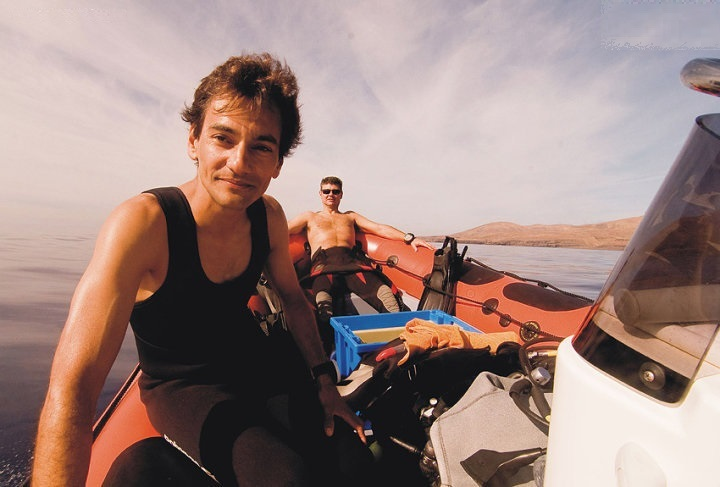
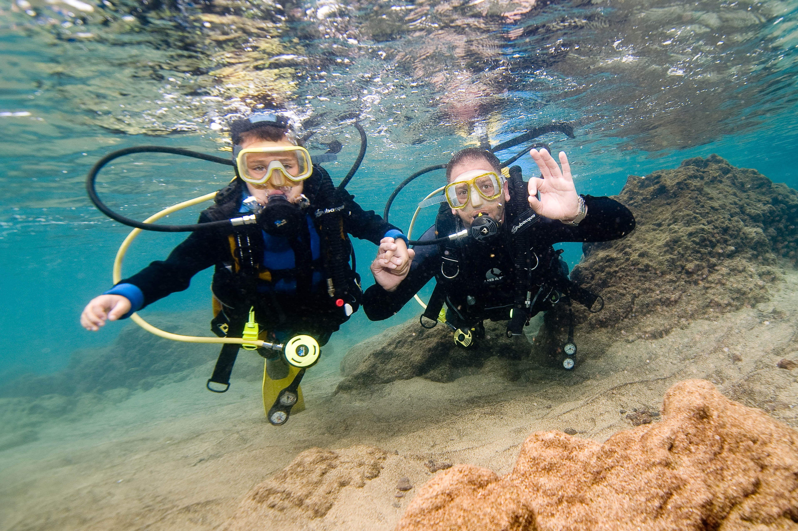
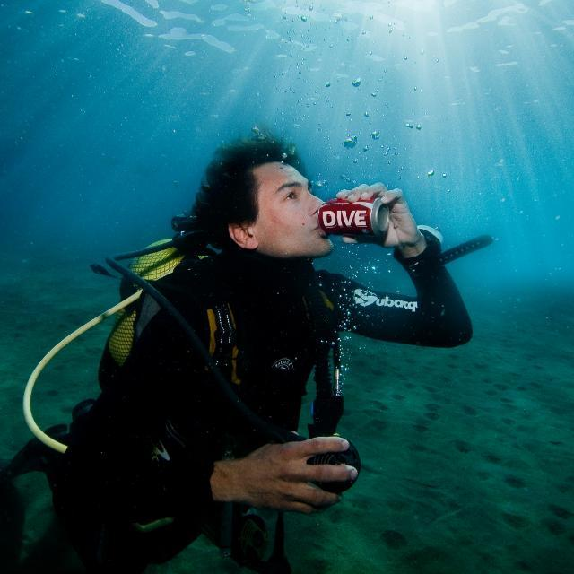
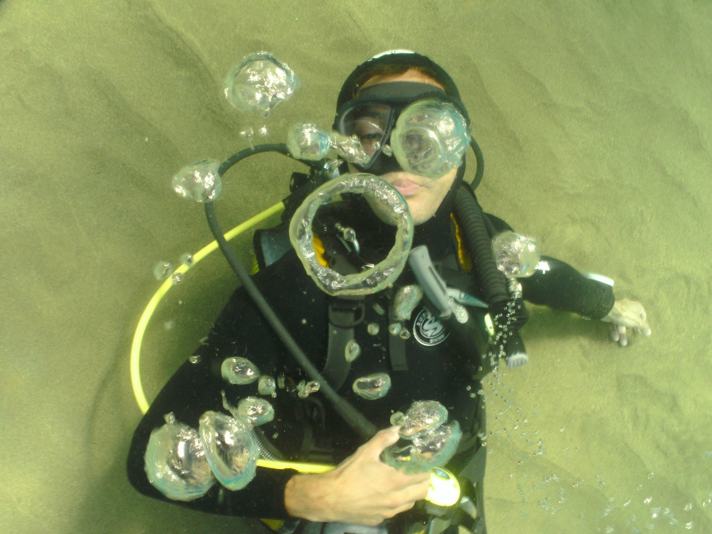
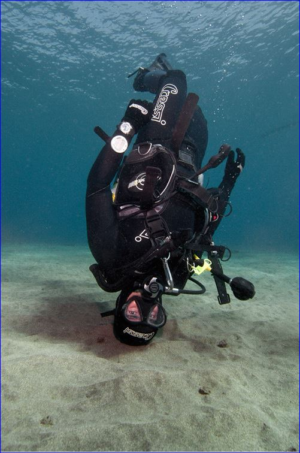
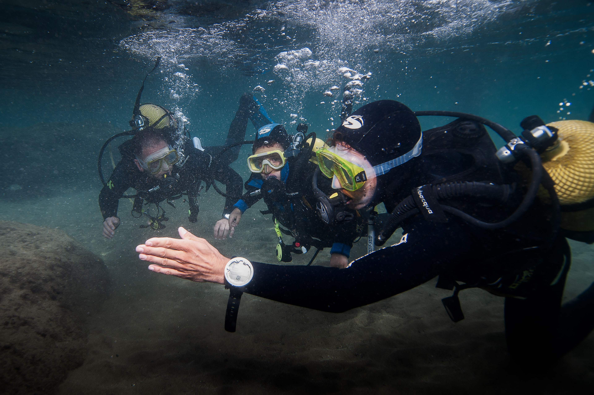

Intro

Einzigartiges Taucherlebnis mit Wasserabenteuer München e.V.
Willkommen bei Wasserabenteuer München e.V., Ihrem Experten für Tauchkurse in München. Wir bieten exklusive und persönliche Tauchkurse an.
Wir sind ein Tauchverein in München, der Tauchkurse auf höchstem Niveau anbietet. Unsere Angebote zeichnen sich durch ihre Exklusivität und persönliche Betreuung aus:
- Exklusive Kurse: Unsere Kurse sind besonders persönlich und sorgfältig gestaltet, um jedem Teilnehmer ein individuelles und intensives Taucherlebnis zu bieten.
- Erfahrener Tauchlehrer mit beeindruckendem Hintergrund: Rafael Sosa, unser Tauchlehrer und in München ansässig, bringt mit über 1000 ausgebildeten Schülern und mehr als 6000 Tauchgängen eine beispiellose Erfahrung und Leidenschaft für das Tauchen mit.
- Tauchgänge in den besten Gewässern: Wir beginnen in den Pools in Oberding, nur 36 km nördlich von München, und führen unsere Schüler dann in die warmen, klaren Gewässer von Lanzarote, einem der schönsten Tauchplätze, der eine unvergleichliche Sicht und faszinierende Unterwasserlandschaften bietet.
- Unschlagbare Sichtweite: In den klaren Gewässern des Atlantiks genießen Sie eine Sichtweite von bis zu 40 Metern – ein Erlebnis, das für bleibende Erinnerungen sorgt.
- PADI-Zertifizierung: Unsere Kurse sind PADI-zertifiziert und entsprechen den höchsten internationalen Standards, was Ihnen eine weltweit anerkannte Qualifikation im Tauchen sichert.
- Wettbewerbsfähige Angebote: Wir bieten ein umfassendes und attraktives Programm, das auf die Bedürfnisse und Wünsche unserer Schüler abgestimmt ist und sie in eine faszinierende Unterwasserwelt entführt.
Unser Ziel ist es, unseren Schülern nicht nur eine fundierte Ausbildung zu bieten, sondern auch ein unvergessliches und angenehmes Taucherlebnis in einer lebendigen und einladenden Umgebung. Mach mit uns den ersten Schritt in die faszinierende Welt des Tauchens!
PADI Open Water Diver Kurs

PADI Open Water Diver (OWD) Kurs
Unser OWD-Kurs beginnt mit einem umfassenden Theorieteil online und wird mit Praxiseinheiten im Pool und im Freiwasser fortgesetzt. Das Pooltraining findet in den Schwimmbädern unseres Partners in Oberding (36 km nördlich von München) statt.
Ausrüstung:
Die Kursteilnehmer benötigen eigene Füsslinge und einen Schnorchel (Badebekleidung und Handtuch natürlich auch). Die restliche Tauchausrüstung für den Kurs wird von uns zur Verfügung gestellt. Transferkosten sind nicht im Preis inbegriffen.
Medizinisches Zertifikat:
Jeder Teilnehmer muss ein ärztliches Attest vorlegen, das die Tauchtauglichkeit bestätigt.
Theorie:
Der Kurs beginnt mit der PADI-Theorie, die online absolviert wird. Die Kosten für die PADI-Gebühren sind im Kurspreis enthalten. Teilnehmer, die sich unsicher sind, ob sie den Kurs vollständig abschließen möchten, erhalten ein kostenloses Leihmanual für den OWD-Kurs.
Pooltraining:
Nach Abschluss der Theorie erfolgt das Pooltraining an einem Sonntag von 9:00 bis 18:00 Uhr in Oberding. Das Training besteht aus drei Poolsessions mit Pausen, in denen wir die Theorie wiederholen, Fortschritte besprechen und eine Mittagspause einlegen.
Freiwasser-Tauchgänge:
Nach erfolgreichem Pooltraining sind die Teilnehmer qualifiziert, ihre Ausbildung mit 4 Freiwassertauchgängen auf Lanzarote abzuschließen. Sie können entweder mit dem Wasserabenteuer München e.V.-Tauchlehrer, der sie im Pool betreut hat (je nach Verfügbarkeit), oder mit unserem Partner-Tauchcenter auf Lanzarote tauchen, wo flexible Termine möglich sind.
Das Training findet an der Playa Chica in Puerto del Carmen, Lanzarote statt, einer Strandlage mit Pool-ähnlichen Bedingungen, einer Transparenz von 40 Metern, keiner Wellenbewegung und angenehmen Temperaturen auch im Winter!
Die Reise- und Übernachtungskosten auf Lanzarote sind nicht im Kurspreis enthalten und müssen von den Teilnehmern selbst organisiert werden. Es wird eine Mindestaufenthaltsdauer von 4 Nächten empfohlen, idealerweise 6 oder mehr. Die Tauchausrüstung wird auf Lanzarote gestellt. Vor Ort benötigen die Teilnehmer nur Badebekleidung und ein Handtuch. Die Versicherung während des Trainings ist ebenfalls im Preis inbegriffen.
Preis:
- Komplettkurs mit Pooltraining, Freiwassertauchgängen auf Lanzarote und PADI Zertifizierung:
- 590 € pro Person (mindestens 1, maximal 4 Teilnehmer)
Try a Pool-Dive

Probiere einen Tauchgang im Pool
Der Pooltauchgang ist eine hervorragende Möglichkeit, das Tauchen in einer sicheren und kontrollierten Umgebung zu erleben. Während dieser Aktivität hast du die Gelegenheit, die Grundlagen des Tauchens zu lernen und ein einzigartiges Erlebnis im Wasser zu genießen.
Die Aktivität findet an einem Mittwoch oder Donnerstagabend zwischen 16:00 und 22:00 Uhr statt, wenn das Schwimmbad geöffnet ist. Die Gesamtdauer der Aktivität, einschließlich einer kurzen theoretischen Einführung zur Sicherheit, beträgt etwa 2 Stunden.
Im Preis ist alles enthalten: Tauchausrüstung (außer Füsslinge und Schnorchel), Versicherung und Flaschenladung. Die Teilnehmer müssen nur ihre eigenen Füsslinge und Schnorchel mitbringen. Es sind keine abschließenden Qualifikationen erforderlich, und es ist nicht notwendig, zu Beginn eine Theorie zu absolvieren, außer den Erklärungen, die am Beckenrand gegeben werden.
Preise:
- Pool-Try-Dive mit Wasserabenteuer München e.V.:
- 125 € pro Person bei 1 Teilnehmer
- 95 € pro Person bei 2 Teilnehmern
- 85 € pro Person bei 3 Teilnehmern
- 80 € pro Person bei 4 Teilnehmern
Preise

| Preis: |
| OWD Komplettkurs inkl. Freiwassertauchgänge auf Lanzarote und PADI Zertifizierung |
590€ |
(Preise verstehen sich pro Person)
Der Kurs kann für denselben Preis auch individuell durchgeführt werden. Die maximale Teilnehmerzahl pro Kurs beträgt 4 Personen.
Was ist im Preis inbegriffen?
- Die gesamte benötigte Tauchausrüstung inklusive Tauchflaschenfüllungen (außer Füsslinge und Schnorchel).
- Die Versicherung während des Trainings.
- Das PADI-E-Learning.
- PADI-Gebühren für die Zertifizierung.
- Training in den Schwimmbädern unseres Partners in Oberding (36 km nördlich von München).
- Freiwassertauchgänge auf Lanzarote (Playa Chica in Puerto del Carmen) mit kompletter Leihausrüstung inklusive Tauchflaschenfüllungen.
Was ist nicht im Preis inbegriffen?
- Füsslinge und Schnorchel müssen selbst mitgebracht werden.
- Transportkosten nach Oberding.
- Flüge, Unterkunft und Verpflegung auf Lanzarote.
- Transport auf Lanzarote, abgesehen von dem Equipment-Transport zum Tauchplatz.
- Das Tauchtauglichkeits-Attest.
Sende uns einfach deine Anfrage und wir bestätigen den Kurs – wir passen die Termine flexibel an deine Wünsche an, soweit es auch mit unserer Planung vereinbar ist.
Flüge nach Lanzarote

| Date |
Flight |
Duration |
Price (€) |
23/02/2025
02/03/2025 |
Munich (MUC) → Lanzarote (ACE)
Lanzarote (ACE) → Munich (MUC) |
4h 35min
4h 15min |
250 |
Hinweis: Diese Flüge dienen als Beispiel basierend auf Informationen von Kiwi.com zum Zeitpunkt der Abfrage (03.12.2024). Preise und Verfügbarkeit können sich ändern.
Unterkunft

In unserem empfohlenen Unterkunft in Arrecife auf Lanzarote fühlen sich die Gäste wunderbar aufgehoben. Der Preis beträgt nur ungefähr 20/25 € pro Nacht und Person. Obwohl die Zimmer geteilt werden, hat unser Tauchlehrer die Erfahrung gemacht, dass man sich dort wie zu Hause fühlt.
Von dort aus kann man mit dem Bus (lokal als 'guagua' bekannt) direkt in etwa 40 Minuten ohne Umsteigen zum Tauchzentrum gelangen. Dies ist lediglich eine Empfehlung; natürlich kannst du deine Unterkunft nach Belieben wählen. Weitere Unterkunftsmöglichkeiten findest du auf Booking.com.
Hier ist der direkte Link zu der empfohlenen Unterkunft "La Casita de Arrecife".
Kontakt